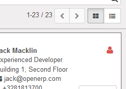
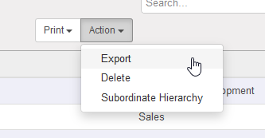
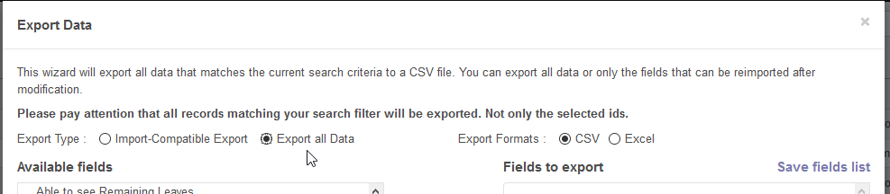
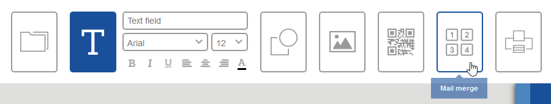
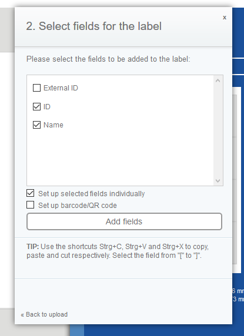
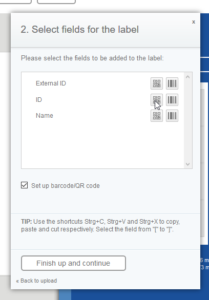

How to make a QR code
To allow employees use your sign in system you'd need to:
- export employee IDs;
- convert IDs into QR codes;
- print out QR codes and hand them out to your employees.
Export employee IDs
Follow below steps to export each employees' ID.
- Open Odoo's Employees page and switch to the list view.

- Select all employees and press Action -> Export

- Select Export all data and pick info fields that you want to put on the sticker with QR code

- Important: make sure you also picked ID field, because it is used to generate QR codes
- Select desired export format (doesn't make big difference), press Export and save the file on your PC
Convert IDs into QR codes
Online HERMA tool will allow you to import employees' information that we exported in the previous step and generate a printable PDF with everything, including QR codes. We made a quick video tutorial for you, check it out!
Let's go through creating stickers with QR codes step-by-step.
- Go to HERMA tool using the link above
- Select any preferrable design template (we will go with the Address labels, design 10)
- Remove unneeded labels by selecting them and hitting Delete
- Click on the Mail merge button and upload previously exported file

- Now select needed fields and press Add fields

- Now select "Set up barcode/QR code" checkbox and press the little QR code button next to the ID field to add a QR code

- That's it, press Finish up and continue and Print preview
After above steps HERMA will generate same stickers per each employee in your CSV/XLS file automatically and you don't need to repeat the same procedure for each employee. You will be offered to download the generated PDF which later can be printed on the sticker paper.
If you wish, you can use any other online tool for making QR codes, like The QR Code Generator. But note, that QR code should have an employee ID encoded in a text format!
Setting up Odoo to work with QR codes
Before you give the QR codes to your employees make sure you have created a Timesheet for each employee for the upcoming days. Once the timesheets are created, you will have to connect Odoo Time Clock iOS app to your Odoo server.
Open upu the app and enter your Odoo server information, press Connect and select needed database from the list. That's it, if timesheets were created and QR codes generated correctly, you will be able to sign in with QR code and see the greetings mesasge.